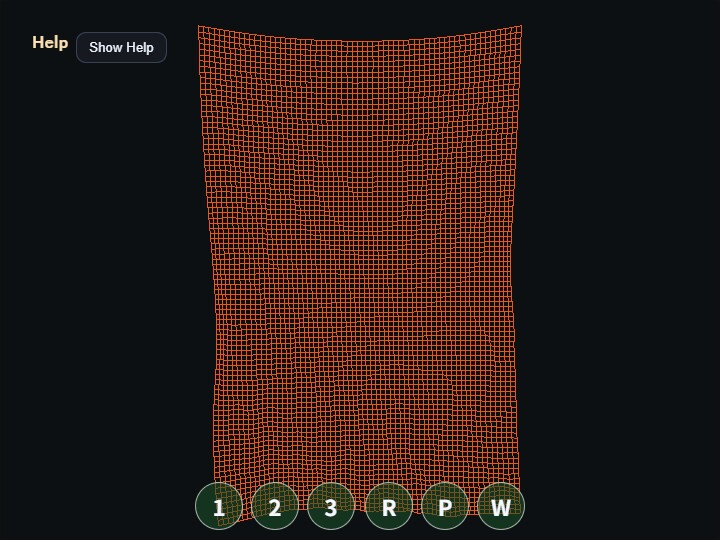

compute_cloth
English | 日本語

概要
- WebGPU の Compute Shader を使い、格子状の布を mass-spring モデルで更新するサンプルです
- webg コアライブラリには compute 用 API を追加せず、WebgApp が初期化した WebGPU device / queue / canvas context をサンプル内で直接使っています
- 布の頂点は storage buffer に保持し、compute pass が前フレームの頂点位置と近傍頂点を読んで次フレームの位置と速度を書き込みます
- src buffer と dst buffer を分ける ping-pong 構成にしているため、ある頂点が近傍頂点を読む途中で別 invocation がその近傍値を書き換える競合を避けています
- 構造バネの力だけでは布が伸びすぎやすいため、上下左右の隣接頂点との距離が許容長を超えた場合に少し戻す strain limit を入れています
- 可動頂点の質量を縦96段の累積荷重に合わせて設定し、重力は加速度として一定のまま、バネがカーテンの長さを支えられるようにしています
- 床の衝突面は最大許容伸長時の下端より下へ置き、通常の垂れでは床に当たって重ならないようにしています
- 1 frameを3 substepへ分け、位置制限後の実際の移動量から速度を再計算して、下向き速度が補正後も残ることを防いでいます
- 2頂点先を結ぶ曲げバネを追加し、下部が鋭く折れて自己交差して見える状態を抑えています
- 風はカーテン全体で同じ前後方向へ周期的に反転し、位置によって振幅だけを変えることで、中央の折り返しと一方向への流出を防いでいます
- 上端の固定位置は中央が0.18だけ下がる緩やかな弧にし、真っ直ぐ張った板ではなく吊られた布として見える形にしています
- render pass は compute 後の storage buffer を vertex shader で読み、Wire / Flat / Smooth の表示 mode に応じて line-list または triangle-list として描画します
実行方法
- 実行ファイルは ./compute_cloth.html です
- WebGPU に対応したブラウザで開き、必要に応じて help panel や HUD と合わせて確認してください
使用している webg 機能
- WebgApp: Screen、diagnostics、入力基盤をまとめて初期化する
- WebgApp computeFrame:
computeFrame: trueとonComputeFramehandlerで、標準scene描画を行わずcompute / renderの順序を制御する - Screen.resize(): WebgApp が保持する Screen を通じて viewport 変更時の canvas 実ピクセルを更新する
- WebgApp.getGPU(): core API を変更せず、サンプル側で raw WebGPU pipeline を作るための入口
- buildHelpPanelOptions() + showOverlayPanel(): 操作説明と現在状態を折りたたみ可能な help panel として表示
- InputController.installTouchControls(): PCとスマートフォンの両方へ 1 / 2 / 3 / R / P / W の操作ボタンを表示
使用している WebGPU 機能
- storage buffer: 布頂点の位置、固定フラグ、速度を GPU 側に保持
- vertex mass: 各可動頂点の質量を保持し、バネ力、風力、速度抵抗を質量で割って加速度へ変換
- ping-pong buffer: read-only の src と writeable の dst を毎フレーム交互に入れ替える
- compute pipeline: 1 invocation = 1 cloth vertex として近傍ばね、重力、風、減衰を計算
- bend spring: 横と縦の2頂点先を弱いバネで結び、布の長さを支えながら局所的な折れ曲がりを抑制
- coherent gust: カーテン全体の風向を同じ時間波で反転し、横位置と高さでは振幅だけを変えて自然な揺れを生成
- strain limit: 構造バネの隣接距離を初期長の1.06倍以内へ戻し、軽い動きを保ちながら布の過伸長を抑える
- simulation substeps: 1 frameを3回に分けて積分と位置制限を反復し、縦長カーテンの累積荷重を安定して処理
- line vertex index stream: 横方向と縦方向の格子線を Wire 表示として描画
- triangle vertex index stream: 格子 cell を 2 triangle に分け、Flat / Smooth が同じ高解像度の面を共有して描画
- render pipeline: storage buffer を vertex shader から読み、CPU readback なしで変形後の布を表示
- fixed cloth color: 風による速度で頂点色を変えず、Wire / Flat / Smooth を同じ固定オレンジ色で表示
- view-space lighting: 視点右上からの光を使い、弱い ambient、diffuse 主体、specular highlight で面の向きを表示
- camera-following light: world space の法線を camera 回転で view space へ変換し、画面右上に固定した光と同じ座標系で照明を計算
- timestamp query: 3 substep全体のGPU Compute時間とRender Pass時間を取得し、各区間と合計のloadを表示する
確認ポイント
- 起動後に 64 x 96 の縦長格子布が上端で固定され、重力と風で揺れることを確認します
- ドラッグで camera を回し、Shift + ドラッグ、右ドラッグ、または中ドラッグで PAN しても、布の simulation は GPU 側のまま継続することを確認します
- スマートフォンでは1本指ドラッグで orbit、2本指ドラッグで PAN、pinch で zoom できることを確認します
- PCとスマートフォンの画面下部に表示される 1 / 2 / 3 / R / P / W ボタンで表示 mode、reset、pause、wind を操作できることを確認します
- H または help panel のボタンで説明を折りたたみ、Show Help で再表示できることを確認します
- 1 / 2 / 3 で Wire / Flat / Smooth を切り替え、同じ storage buffer から線表示とポリゴン表示を切り替えられることを確認します
- W で wind を切り替えると、奥行き方向の波が弱まる／戻ることを確認します
- P で pause したとき、compute pass が止まり、現在の storage buffer がそのまま描画されることを確認します
- R で布が初期状態へ戻ることを確認します
- Help panelの
GPU compute / GPU render / GPU total / JS timeと各loadが更新され、pause中のrender時間がGPU Compute時間へ混ざらないことを確認します
操作方法
- ドラッグ: camera orbit
- Shift + ドラッグ / 右ドラッグ / 中ドラッグ: camera pan
- ホイール: zoom
- 1本指ドラッグ: camera orbit
- 2本指ドラッグ: camera pan
- pinch: zoom
- 1: Wire 表示
- 2: Flat polygon 表示
- 3: Smooth polygon 表示
- W: wind on / off
- P: pause / resume
- R: reset cloth
- H: hide / show help
実装の詳細
- main.js の compute shader は srcState を read-only、dstState を read-write として分けています
- ばね計算では上下左右と斜め近傍を読み、距離が極端に短い場合は正規化せずゼロ寄与にしています
- 重力は質量に左右されない加速度として加え、バネ、風、速度抵抗は力を頂点質量で割って加速度へ変換します
- strain limitや床で位置を補正した後は、補正済み位置と前substep位置の差から速度を再計算し、補正前の下向き速度を残しません
- render shader は vertex attribute で渡された cloth vertex index を使い、storage buffer 内の頂点位置を直接参照しています
- Flat / Smooth は同じ triangle stream を使い、Flat は変形後の3頂点から作った面法線を WGSL の
@interpolate(flat)で triangle 全体へ一定値として渡し、Smooth は grid 近傍から作った頂点法線を補間しています - 布の色は固定で、視点右上の光に対する diffuse と specular highlight によって揺れと面の向きを読み取ります
- 操作説明と状態表示は独自 HUD ではなく OverlayPanel の help panel にまとめ、スマートフォンの単発操作は Touch ボタンへ分離しています
- CPU 側へ頂点座標を戻さない構成なので、布や髪などの描画寄り simulation を GPU 内で完結させる例として確認できます